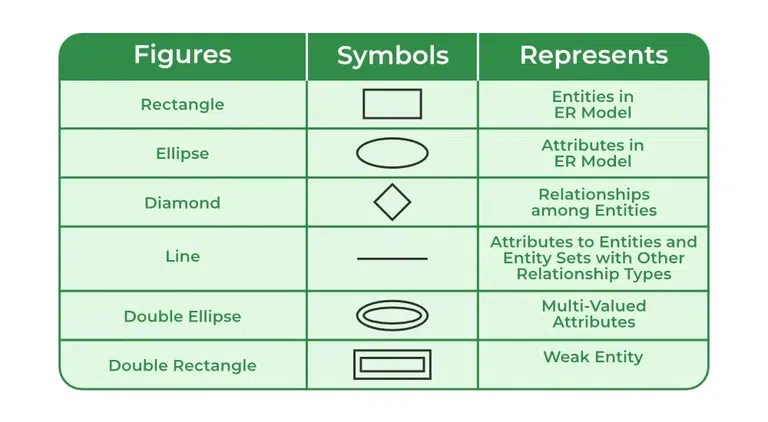

LEC-3: ER Model¶
1. Data Model¶
Collection of conceptual tools for describing data, data relationships, data semantics, and consistency constraints.
2. ER Model¶
- It is a high level data model based on a perception of a real world that consists of a collection of basic objects, called entities and of relationships among these objects.
- Graphical representation of ER Model is ER diagram, which acts as a blueprint of DB.
- It has physical existence.
3. Entity¶
An Entity is a "thing" or "object" in the real world that is distinguishable from all other objects.
- Each student in a college is an entity.
- Entity can be uniquely identified. (By a primary attribute, aka Primary Key)
- Strong Entity: Can be uniquely identified.
- Weak Entity: Can't be uniquely identified, depends on some other strong entity.
- It doesn't have sufficient attributes, to select a uniquely identifiable attribute.
- Loan -> Strong Entity, Payment -> Weak, as instalments are sequential number counter can be generated separate for each loan.
- Weak entity depends on strong entity for existence.
4. Entity Set¶
- It is a set of entities of the same type that share the same properties, or attributes.
- E.g., Student is an entity set.
- E.g., Customer of a bank
5. Attributes¶
- An entity is represented by a set of attributes.
- Each entity has a value for each of its attributes.
- For each attribute, there is a set of permitted values, called the domain, or value set, of that attribute.
- E.g., Student Entity has following attributes:
- A. Student_ID
- B. Name
- C. Standard
- D. Course
- E. Batch
- F. Contact number
- G. Address
Types of Attributes¶
- Simple
- Attributes which can't be divided further.
-
E.g., Customer's account number in a bank, Student's Roll number etc.
-
Composite
- Can be divided into subparts (that is, other attributes).
- E.g., Name of a person, can be divided into first-name, middle-name, last-name.
- If user wants to refer to an entire attribute or to only a component of the attribute.
-
Address can also be divided, street, city, state, PIN code.
-
Single-valued
- Only one value attribute.
-
e.g., Student ID, loan-number for a loan.
-
Multi-valued
- Attribute having more than one value.
- e.g., phone-number, nominee-name on some insurance, dependent-name etc.
-
Limit constraint may be applied, upper or lower limits.
-
Derived
- Value of this type of attribute can be derived from the value of other related attributes.
-
e.g., Age, loan-age, membership-period etc.
-
NULL Value
- An attribute takes a null value when an entity does not have a value for it.
- It may indicate "not applicable", value doesn't exist. e.g., person having no middle-name.
- It may indicate "unknown".
- Unknown can indicate missing entry, e.g., name value of a customer is NULL, means it is missing as name must have some value.
- Not known, salary attribute value of an employee is null, means it is not known yet.
6. Relationships¶
- Association among two or more entities.
- e.g., Person has vehicle, Parent has Child, Customer borrow loan etc.
- Strong Relationship: between two independent entities.
- Weak Relationship: between weak entity and its owner/strong entity.
- e.g., Loan \<instalment-payments> Payment.
Degree of Relationship¶
- Number of entities participating in a relationship.
- Unary: Only one entity participates. e.g., Employee manages employee.
- Binary: Two entities participates. e.g., Student takes Course.
- Ternary: Three entities participates. E.g., Employee works-on branch, employee works-on job.
- Binary are common.
Relationships Constraints¶
- Mapping Cardinality / Cardinality Ratio
- Number of entities to which another entity can be associated via a relationship.
- One to one: Entity in A associates with at most one entity in B, where A & B are entity sets. And an entity of B is associated with at most one entity of A.
- E.g., Citizen has Aadhar Card.
- One to many: Entity in A associated with N entity in B. While entity in B is associated with at most one entity in A.
- e.g., Citizen has Vehicle.
- Many to one: Entity in A associated with at most one entity in B. While entity in B can be associated with N entity in A.
- e.g., Course taken by Professor.
-
Many to many: Entity in A associated with N entity in B. While entity in B also associated with N entity in A.
- Customer buys product.
- Student attend course.
-
Participation Constraints
- Aka, Minimum cardinality constraint.
- Types: Partial & Total Participation.
- Partial Participation: not all entities are involved in the relationship instance.
- Total Participation: each entity must be involved in at least one relationship instance.
- e.g., Customer borrow loan, loan has total participation as it can't exist without customer entity. And customer has partial participation.
7. ER Notations¶
